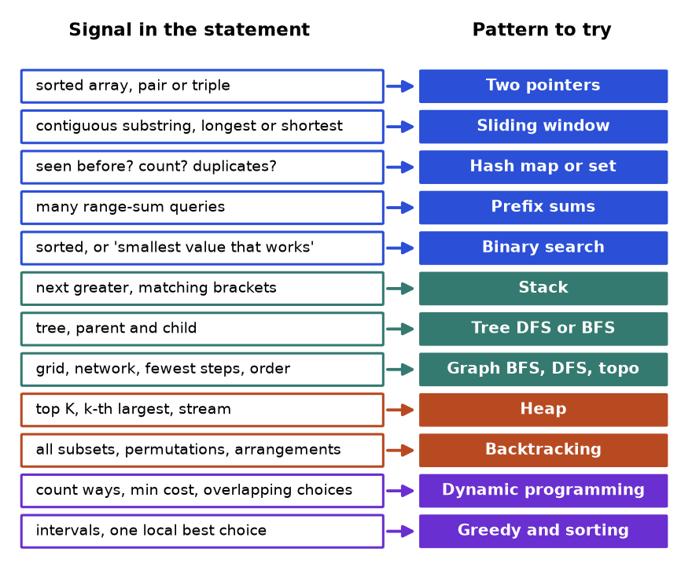
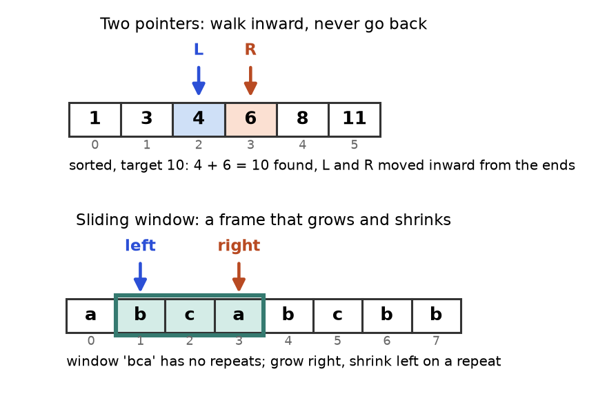
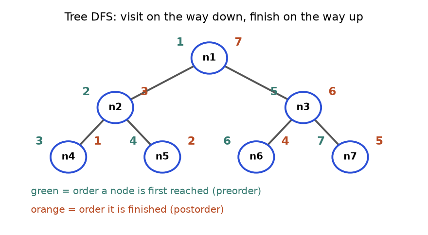
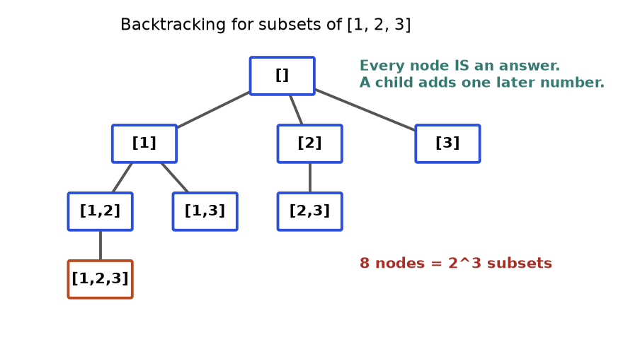
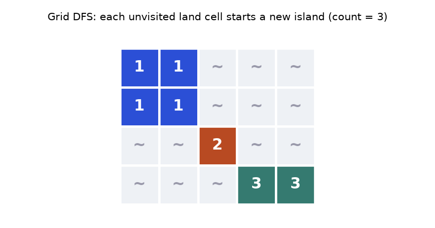
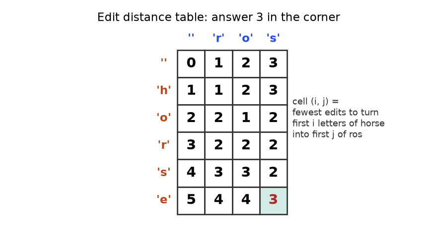
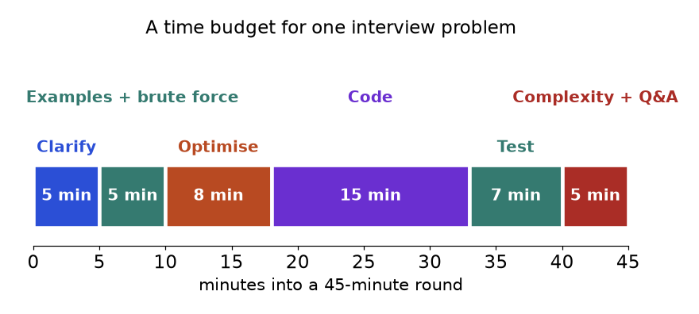
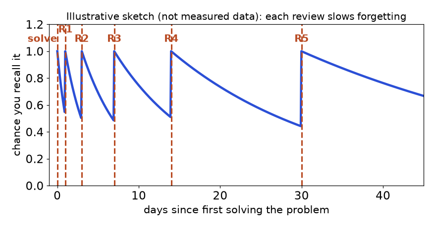
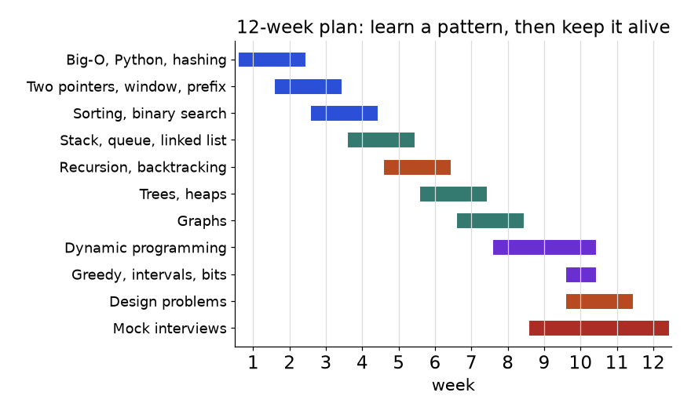

Meet Asha. She has solved 200 practice problems, and she still froze in her last interview. The question was new to her, so she tried to remember the answer instead of finding it. She stared at the screen for six minutes, then started coding a nested loop she knew was too slow. The problem was not her memory. Her knowledge was stored as 200 separate answers, not as a small set of patterns, so nothing connected a new question to an old tool.
This chapter fixes that. Almost every interview problem is one of about a dozen patterns wearing a costume. If you can read the costume off in two minutes (the keywords, the input shape, the size limit), you already know the template to try. The rest is careful execution: say your plan out loud, code it cleanly, test it, and state the cost. You will get a decision flow chart, a map of 150 classic problems, a seven-step interview routine with three full mock interviews, a spaced-repetition system, a 12-week schedule, a 20-question self-test and a short guide to how all this shows up in data engineering and machine learning interviews.
Chapters 1 to 11 taught each pattern in depth. Here we compress them into recognition cards, run each one on a concrete input, and climb from easy to hard problems. For a lighter tour of the same ideas, see also Chapter 8 and Chapter 9 of the Linux, Git, Algorithms and CS Foundations document. All code below was run with Python 3.14 and the printed output is real.
| Word | Plain meaning |
|---|---|
| Pattern | A reusable way of attacking a family of problems, for example "slide a window along the array" |
| Template | The short skeleton code of a pattern. You fill in the blanks for the problem |
| Signal | A word or fact in the statement that points to a pattern, such as "contiguous" or "k-th largest" |
| Brute force | The plain solution that tries everything. Slow, but it is always your safe starting point |
| Constraint | A limit stated in the problem, such as "n up to 100,000". It tells you how fast your solution must be |
Look at the chart below. Read the problem, find the closest signal on the left, and try the pattern on the right first. Many problems match two rows. That is fine: try the cheaper one first, and use the brute force you already wrote to check it.

How to read it: pick the row whose left box looks most like your problem. Do not search for a perfect match. The chart gives you a first guess, and the guess is cheap to test on a small example.
| Size of n | Target time | Typical patterns |
|---|---|---|
| up to about 20 | O(2n) or O(n!) | Backtracking, bitmask subsets |
| up to about 1,000 | O(n2) | 2D dynamic programming, all pairs |
| up to about 100,000 | O(n log n) | Sorting, heap, binary search, hash map |
| 1,000,000 or more | O(n) or O(log n) | One pass, two pointers, window, prefix sums, math |
These are rules of thumb, not laws. They come from the fact that Python runs roughly millions (not billions) of simple steps per second. Use them to rule patterns out: if n is 100,000 and your idea is O(n2), it is the wrong idea.
A keyword spotter in code. Here is the flow chart as a tiny function. It is crude on purpose: it shows that recognition is mostly looking up signals, and it gives you something to extend with your own signals.
SIGNALS = [
("sorted", "two pointers or binary search"),
("contiguous", "sliding window or prefix sums"),
("substring", "sliding window"),
("k-th", "heap or quickselect"),
("top k", "heap"),
("all subsets", "backtracking"),
("number of ways", "dynamic programming"),
("fewest steps", "BFS"),
("prerequisite", "topological sort"),
("intervals", "sort then sweep"),
("next greater", "monotonic stack"),
("duplicate", "hash set"),
]
def hint(statement):
text = statement.lower()
return [pattern for word, pattern in SIGNALS if word in text]
assert hint("Find the longest contiguous subarray with sum k") == ["sliding window or prefix sums"]
assert hint("Count the number of ways to climb stairs") == ["dynamic programming"]
assert hint("Return the fewest steps; courses have a prerequisite list") == ["BFS", "topological sort"]
for q in ["Longest substring with no duplicate letters",
"Top K frequent words",
"Merge overlapping intervals"]:
print(q, "->", hint(q))Longest substring with no duplicate letters -> ['sliding window', 'hash set']
Top K frequent words -> ['heap']
Merge overlapping intervals -> ['sort then sweep']Notice the first line of output: two signals fired for one statement. The substring signal says window, the duplicate signal says "remember what you have seen". Real solutions often combine them (a window plus a hash map).
Five patterns cover most array and string questions. They were taught in Chapters 2, 3 and 4. Here is the one-card summary of each.
| Pattern | One-sentence idea | Real-life analogy | How to recognise it |
|---|---|---|---|
| Hash map or set | Store what you have seen so a later lookup costs O(1). | A coat-check desk: hand over a ticket, get your coat without searching every rack. | "Have I seen this?", count, group, find a pair, duplicates. |
| Two pointers | Two indexes walk through the data, and every move discards options for good. | Two people squeezing in from both ends of a corridor. | Sorted input, pair or triple with a target, palindrome, in-place rearrange. |
| Sliding window | Keep a frame over a contiguous part; grow the right edge, shrink the left when the rule breaks. | A train window: the view slides, you never rebuild the whole scene. | "Contiguous", "substring", longest or shortest satisfying a rule, all values non-negative. |
| Prefix sums | Store running totals so any range sum is one subtraction. | An odometer: distance between two towns is the difference of two readings. | Many range-sum queries, subarray sum equals k, sums with negatives. |
| Binary search | Cut the search space in half using a yes or no test. | Guessing a number: "higher or lower?" | Sorted data, or "find the smallest x such that a check passes" (answer is monotonic). |
Learn these by typing them from memory until they are boring. Each is a skeleton you adapt.
def first_duplicate(a): # hash set: remember what you have seen
seen = set()
for x in a:
if x in seen:
return x
seen.add(x)
return None
def two_sum_sorted(a, target): # two pointers: sorted array, move the side that helps
l, r = 0, len(a) - 1
while l < r:
s = a[l] + a[r]
if s == target:
return (l, r)
if s < target:
l += 1 # sum too small: need a bigger left value
else:
r -= 1 # sum too big: need a smaller right value
return None
def longest_unique(s): # sliding window with last-seen index
last = {}
left = best = 0
for right, ch in enumerate(s):
if ch in last and last[ch] >= left:
left = last[ch] + 1 # jump the left edge past the repeat
last[ch] = right
best = max(best, right - left + 1)
return best
def range_sum_maker(a): # prefix sums: pre[k] = sum of the first k items
pre = [0]
for x in a:
pre.append(pre[-1] + x)
return lambda i, j: pre[j + 1] - pre[i] # sum of a[i..j] inclusive
def first_true(lo, hi, ok): # binary search on the answer: smallest x with ok(x) True
while lo < hi:
mid = (lo + hi) // 2
if ok(mid):
hi = mid # mid works, but maybe something smaller does too
else:
lo = mid + 1 # mid fails, so the answer is above it
return lo
assert first_duplicate([4, 2, 7, 2, 9]) == 2
assert two_sum_sorted([1, 3, 4, 6, 8, 11], 10) == (2, 3)
assert longest_unique("abcabcbb") == 3
assert range_sum_maker([5, 1, 4, 2, 8])(1, 3) == 7
assert first_true(0, 100, lambda x: x * x >= 50) == 8
print(first_duplicate([4, 2, 7, 2, 9]), two_sum_sorted([1, 3, 4, 6, 8, 11], 10),
longest_unique("abcabcbb"), range_sum_maker([5, 1, 4, 2, 8])(1, 3),
first_true(0, 100, lambda x: x * x >= 50))2 (2, 3) 3 7 8
How to read it: the arrows are the variables l, r (or left, right) at one moment. Every step of the code moves one arrow. The picture is the state of your program.
We run longest_unique("abcabcbb"). At each step, right is the new letter, and last remembers the index where each letter was last seen. The window is s[left..right].
| right | letter | Repeat inside window? | left after | Window | Length | best |
|---|---|---|---|---|---|---|
| 0 | a | no | 0 | a | 1 | 1 |
| 1 | b | no | 0 | ab | 2 | 2 |
| 2 | c | no | 0 | abc | 3 | 3 |
| 3 | a | yes, last a = 0 ≥ 0 | 1 | bca | 3 | 3 |
| 4 | b | yes, last b = 1 ≥ 1 | 2 | cab | 3 | 3 |
| 5 | c | yes, last c = 2 ≥ 2 | 3 | abc | 3 | 3 |
| 6 | b | yes, last b = 4 ≥ 3 | 5 | cb | 2 | 3 |
| 7 | b | yes, last b = 6 ≥ 5 | 7 | b | 1 | 3 |
last[ch] >= left matters. A letter seen long ago, outside the window, is not a repeat. Without that test the left edge would jump backwards.Problem 12.2.1 (easy, two pointers) A sorted list of integers may contain negatives. Return the squares of all items, in sorted order, in O(n) time. Example: [-4, -1, 0, 3, 10] gives [0, 1, 9, 16, 100].
| Idea | The biggest square is at one of the two ends (a big negative or a big positive). Compare the two ends, place the larger square at the back of the answer, and move that pointer inward. |
|---|---|
| Brute force | Square every item, then sort: O(n log n) time. It works, but it ignores that the input is already ordered. |
| Better | Two pointers fill the answer from the back: O(n) time, O(n) space for the output. |
| Code | Below. |
| Dry run | l=0 (-4), r=4 (10): 16 < 100, so out[4]=100, r=3. Then -4 vs 3: 16 > 9, out[3]=16, l=1. Then -1 vs 3: 9, out[2]=9, r=2. Then -1 vs 0: 1, out[1]=1, l=2. Last: out[0]=0. |
| Complexity | O(n) time, O(n) space. |
| Edge cases | All negative, all positive, one item, empty list, repeated values. |
def sorted_squares(a):
out = [0] * len(a)
l, r = 0, len(a) - 1
for k in range(len(a) - 1, -1, -1): # fill from the back
if abs(a[l]) > abs(a[r]):
out[k] = a[l] * a[l]
l += 1
else:
out[k] = a[r] * a[r]
r -= 1
return out
assert sorted_squares([-4, -1, 0, 3, 10]) == [0, 1, 9, 16, 100]
assert sorted_squares([-7, -3, 2, 3, 11]) == [4, 9, 9, 49, 121]
assert sorted_squares([-5, -2]) == [4, 25]
assert sorted_squares([]) == []
print(sorted_squares([-4, -1, 0, 3, 10]))[0, 1, 9, 16, 100]Problem 12.2.2 (medium, prefix sums plus hash map) Given a list of integers (which may be negative) and a number k, count how many contiguous subarrays have a sum of exactly k. Example: [3, 4, 7, 2, -3, 1, 4, 2] with k = 7 gives 4.
| Idea | Let P(i) be the sum of the first i items. The subarray from item j to item i-1 has sum P(i) - P(j). We want P(i) - P(j) = k, so P(j) = P(i) - k. Count how many earlier prefix sums equal that value, using a dictionary. |
|---|---|
| Brute force | Try every start and end, sum each: O(n3), or O(n2) with a running sum. |
| Better | One pass with a dictionary of prefix sums seen so far: O(n). |
| Code | Below, with the brute force as a checker. |
| Dry run | Running sums: 3, 7, 14, 16, 13, 14, 18, 20. Each time we look up (sum - 7): 3-7=-4 none; 7-7=0 found once (the empty prefix), count 1; 14-7=7 found once, count 2; 16-7=9 none; 13-7=6 none; 14-7=7 found, count 3; 18-7=11 none; 20-7=13 found once, count 4. |
| Complexity | O(n) time, O(n) space. |
| Edge cases | The empty prefix (start the dictionary with {0: 1}), negatives, k = 0, zeros that create many matches. |
from collections import defaultdict
def count_subarrays(a, k):
seen = defaultdict(int)
seen[0] = 1 # the empty prefix, so subarrays that start at index 0 count
total = count = 0
for x in a:
total += x
count += seen[total - k] # earlier prefixes that leave a gap of exactly k
seen[total] += 1
return count
def brute(a, k):
return sum(1 for i in range(len(a)) for j in range(i, len(a)) if sum(a[i:j + 1]) == k)
data = [3, 4, 7, 2, -3, 1, 4, 2]
assert count_subarrays(data, 7) == brute(data, 7) == 4
assert count_subarrays([1, 1, 1], 2) == 2
assert count_subarrays([0, 0, 0], 0) == 6
print(count_subarrays(data, 7), count_subarrays([1, 1, 1], 2), count_subarrays([0, 0, 0], 0))4 2 6Problem 12.2.3 (hard, sliding window with counts) Given strings s and t, return the shortest substring of s that contains every letter of t (with the right counts), or "" if none. Example: s = "ADOBECODEBANC", t = "ABC" gives "BANC".
| Idea | Grow the right edge until the window has everything needed. Then shrink the left edge as far as possible while it stays valid, record the length, and continue. Track a single number missing: how many letters of t are still needed. |
|---|---|
| Brute force | Check every substring against t: O(n2) substrings times O(n) to check, so O(n3) in the worst case. |
| Better | The window moves each edge at most n times: O(n + m) where m is the length of t. |
| Code | Below. |
| Dry run | Right edge reaches index 5 (letter C): window "ADOBEC" holds A, B, C, missing = 0, length 6. Shrinking drops A, so it stops. Later the right edge reaches the final C at index 12: the window "ODEBANC" is valid, and shrinking drops O, D and E, leaving "BANC" (length 4), the best. |
| Complexity | O(n + m) time, O(m) space. |
| Edge cases | t longer than s, repeated letters in t (counts matter), letters of s not in t, t empty. |
from collections import Counter
def min_window(s, t):
if not t or len(t) > len(s):
return ""
need = Counter(t) # how many of each letter we still need (may go negative)
missing = len(t) # total letters still needed
best = (0, 0) # (start, end) of the best window so far, end exclusive
best_len = len(s) + 1
left = 0
for right, ch in enumerate(s):
if need[ch] > 0:
missing -= 1
need[ch] -= 1
while missing == 0: # the window is valid: try to shrink it
if right - left + 1 < best_len:
best_len = right - left + 1
best = (left, right + 1)
need[s[left]] += 1
if need[s[left]] > 0: # we just dropped a letter we truly need
missing += 1
left += 1
return s[best[0]:best[1]] if best_len <= len(s) else ""
assert min_window("ADOBECODEBANC", "ABC") == "BANC"
assert min_window("a", "a") == "a"
assert min_window("a", "aa") == ""
assert min_window("aab", "ab") == "ab"
print(min_window("ADOBECODEBANC", "ABC"), min_window("aab", "ab"), repr(min_window("a", "aa")))BANC ab ''seen = {0: 1}.pre[j] - pre[i] for the sum of a[i..j]. That leaves out a[j]. Right: pre[j + 1] - pre[i], because pre[k] holds the first k items.Why two pointers is correct. In two_sum_sorted, if a[l] + a[r] is too small, then a[l] cannot pair with any remaining value (every remaining right value is at most a[r]). So l can be discarded safely. The same discard argument is the proof for every two-pointer solution: say which pointer you may drop and why. Binary search on the answer requires a monotonic check: once ok(x) is true, it stays true for all larger x. If you cannot state that sentence, binary search is not valid. Counting windows: to count subarrays with at most k distinct items, a window works; "exactly k" is solved as "at most k" minus "at most k-1". Interviewers like that trick.
| Pattern | One-sentence idea | Real-life analogy | How to recognise it |
|---|---|---|---|
| Stack | Last in, first out: the newest open item is the first one you must close. | A pile of plates, or nested brackets in a sentence. | Matching brackets, undo, "most recent", evaluating nested expressions. |
| Monotonic stack | Keep the stack sorted; pop items that a new item makes obsolete. | People queuing for a photo: a tall person arrives and hides everyone shorter in front. | "Next greater or smaller element", "how many days until", largest rectangle. |
| Fast and slow pointers | One pointer moves two steps, the other one step, on a linked list. | Two runners on a track: the fast one laps the slow one only if the track loops. | Cycle detection, middle of a list, k-th from the end. |
| Tree DFS (recursion) | Solve for the left subtree and right subtree, then combine at the node. | A manager who asks each team lead for a report, then merges them. | Depth, sums, paths, "is it valid", anything defined from the children. |
| Tree BFS (level order) | Use a queue and process one whole level at a time. | Ripples spreading from a stone dropped in water. | "Level by level", "shortest", right-side view, minimum depth. |
from collections import deque
class ListNode:
def __init__(self, val, nxt=None):
self.val, self.next = val, nxt
class TreeNode:
def __init__(self, val, left=None, right=None):
self.val, self.left, self.right = val, left, right
def has_cycle(head): # fast and slow pointers
slow = fast = head
while fast and fast.next:
slow, fast = slow.next, fast.next.next
if slow is fast:
return True
return False
def depth(node): # tree DFS: answer from the children
if node is None:
return 0
return 1 + max(depth(node.left), depth(node.right))
def levels(root): # tree BFS: one queue, one level per round
out, q = [], deque([root] if root else [])
while q:
level = []
for _ in range(len(q)): # len(q) is frozen at the start of the round
node = q.popleft()
level.append(node.val)
if node.left: q.append(node.left)
if node.right: q.append(node.right)
out.append(level)
return out
c = ListNode(3); b = ListNode(2, c); a = ListNode(1, b)
assert has_cycle(a) is False
c.next = a # close the loop
assert has_cycle(a) is True
tree = TreeNode(1, TreeNode(2, TreeNode(4), TreeNode(5)), TreeNode(3, TreeNode(6), TreeNode(7)))
assert depth(tree) == 3 and levels(tree) == [[1], [2, 3], [4, 5, 6, 7]]
print(has_cycle(a), depth(tree), levels(tree))True 3 [[1], [2, 3], [4, 5, 6, 7]]
How to read it: n1 is first (green 1) and last (orange 7). Leaves such as n4 are reached and finished back to back. When your recursive function returns a value, that value is computed at the orange moment, because both children are done.
The stack holds indexes of days still waiting for a warmer day. Temperatures: [73, 74, 75, 71, 69, 72, 76, 73]. When today is warmer than the day on top, pop it and record the gap.
| i | Temp | Pops (index: answer) | Stack after push (indexes) |
|---|---|---|---|
| 0 | 73 | none | [0] |
| 1 | 74 | 0: 1 - 0 = 1 | [1] |
| 2 | 75 | 1: 2 - 1 = 1 | [2] |
| 3 | 71 | none (71 < 75) | [2, 3] |
| 4 | 69 | none | [2, 3, 4] |
| 5 | 72 | 4: 5 - 4 = 1, then 3: 5 - 3 = 2 | [2, 5] |
| 6 | 76 | 5: 6 - 5 = 1, then 2: 6 - 2 = 4 | [6] |
| 7 | 73 | none | [6, 7] |
Days 6 and 7 stay on the stack: no warmer day follows, so their answer stays 0. The result is [1, 1, 4, 2, 1, 1, 0, 0].
Problem 12.3.1 (easy, stack) A string holds only the characters ( ) [ ] { }. Return True if every bracket is closed by the matching type in the right order. Example: "{[()]}" is True, "(]" is False.
| Idea | Push every opening bracket. On a closing bracket, the top of the stack must be its partner. At the end the stack must be empty. |
|---|---|
| Brute force | Repeatedly delete the pairs "()", "[]", "{}" from the string until nothing changes: O(n2). |
| Better | One pass with a stack: O(n). |
| Dry run | "{[()]}" pushes {, [, (. Then ")" matches the top "(", "]" matches "[", "}" matches "{". The stack is empty: True. For "(]": push "(", then "]" finds top "(" which is wrong: False. |
| Complexity | O(n) time, O(n) space. |
| Edge cases | Empty string (True), a lone closer (empty stack, must not crash), leftover openers. |
def valid_brackets(s):
partner = {")": "(", "]": "[", "}": "{"}
stack = []
for ch in s:
if ch in partner:
if not stack or stack.pop() != partner[ch]:
return False
else:
stack.append(ch)
return not stack
assert valid_brackets("{[()]}") and valid_brackets("")
assert not valid_brackets("(]") and not valid_brackets(")") and not valid_brackets("((")
print(valid_brackets("{[()]}"), valid_brackets("(]"), valid_brackets(")"))True False FalseProblem 12.3.2 (medium, monotonic stack) For each day's temperature, return how many days you wait for a warmer one (0 if never). Use the list from the trace above.
| Idea | Keep a stack of waiting day indexes. A warmer day pops everyone it beats and writes their wait. |
|---|---|
| Brute force | For each day scan forward: O(n2). |
| Better | Each index is pushed once and popped once: O(n). |
| Dry run | See the trace table above. |
| Complexity | O(n) time, O(n) space. |
| Edge cases | Strictly falling list (all zeros), equal temperatures (not warmer, so no pop), one day. |
def daily_temperatures(t):
ans = [0] * len(t)
stack = [] # indexes of days still waiting
for i, temp in enumerate(t):
while stack and t[stack[-1]] < temp:
j = stack.pop()
ans[j] = i - j
stack.append(i)
return ans
assert daily_temperatures([73, 74, 75, 71, 69, 72, 76, 73]) == [1, 1, 4, 2, 1, 1, 0, 0]
assert daily_temperatures([5, 4, 3]) == [0, 0, 0]
assert daily_temperatures([3, 3, 3]) == [0, 0, 0]
print(daily_temperatures([73, 74, 75, 71, 69, 72, 76, 73]))[1, 1, 4, 2, 1, 1, 0, 0]Problem 12.3.3 (hard, tree DFS with a side answer) A path in a binary tree is any chain of nodes connected by parent-child links; it may start and end anywhere. Return the largest possible sum of node values along one path. Values can be negative.
| Idea | At each node compute gain: the best sum of a downward path that starts at this node (it may go into at most one child). A path that bends at this node uses both children. So at every node, update a global best with node + left_gain + right_gain, but return only node + max(left_gain, right_gain) to the parent, because a parent can extend just one side. |
|---|---|
| Brute force | Try every start and end pair, compute the path sum: O(n2) or worse. |
| Better | One DFS: O(n) time, O(h) space where h is the tree height. |
| Dry run | Tree: root -5, left leaf 8, right child 12 with leaves 10 and -4. Node 12: left_gain 10, right_gain max(-4, 0) = 0, bend = 22, returns 22. Root: left_gain 8, right_gain 22, bend = -5 + 8 + 22 = 25, which is the answer. |
| Complexity | O(n) time, O(h) space. |
| Edge cases | All negative values (answer is the largest single node), a single node, a long chain (deep recursion). |
class TreeNode:
def __init__(self, val, left=None, right=None):
self.val, self.left, self.right = val, left, right
def max_path_sum(root):
best = float("-inf")
def gain(node):
nonlocal best
if node is None:
return 0
left = max(gain(node.left), 0) # drop a branch that hurts
right = max(gain(node.right), 0)
best = max(best, node.val + left + right) # path that bends here
return node.val + max(left, right) # parent may extend one side only
gain(root)
return best
tree = TreeNode(-5, TreeNode(8), TreeNode(12, TreeNode(10), TreeNode(-4)))
assert max_path_sum(tree) == 25
assert max_path_sum(TreeNode(-3)) == -3
assert max_path_sum(TreeNode(-3, TreeNode(-1), TreeNode(-2))) == -1
print(max_path_sum(tree), max_path_sum(TreeNode(-3, TreeNode(-1), TreeNode(-2))))25 -1t[stack[-1]].return node.val + left + right. A parent cannot continue through two children. Right: record the bend in best and return only one side.while fast.next.next. That raises an error on short lists. Right: while fast and fast.next.A monotonic stack is amortised O(n): although a while loop sits inside a for loop, each index is popped at most once, so total pops are at most n. Choose the stack order by the question: pop while the top is smaller to find the next greater element; pop while the top is larger for the next smaller. Deep recursion is a real risk in Python (the default limit is about 1000 frames); for a possibly degenerate tree, say so out loud and offer an iterative version with an explicit stack. See Chapter 5 and Chapter 7 for the full treatment.
| Pattern | One-sentence idea | Real-life analogy | How to recognise it |
|---|---|---|---|
| Graph BFS | Explore all places one step away, then two steps away, using a queue. | A rumour spreading: everyone hears it in waves. | Fewest steps or moves, shortest path with equal costs, grid mazes. |
| Graph DFS | Go as deep as you can, then back up; mark visited so you never loop. | Exploring a maze with a ball of string. | Count connected regions, flood fill, find any path, detect cycles. |
| Topological sort | Order tasks so each comes after its prerequisites. | Getting dressed: socks before shoes. | "Prerequisite", "dependency", build order, detecting an impossible cycle. |
| Heap (top K) | Keep only the K best items in a small min-heap; the worst of them sits on top. | A podium with K places: a newcomer must beat the K-th place. | "Top K", "k-th largest", running median, merge K sorted lists, streams. |
| Backtracking | Build an answer one choice at a time; undo the last choice to try the next. | Trying outfits: put one on, check the mirror, take it off. | "All subsets, permutations, combinations", small n (about 20 or less), puzzles. |
import heapq
from collections import deque, Counter
def bfs_dist(graph, start): # BFS: distance in steps from start to every node
dist = {start: 0}
q = deque([start])
while q:
u = q.popleft()
for v in graph[u]:
if v not in dist: # first visit is the shortest in an unweighted graph
dist[v] = dist[u] + 1
q.append(v)
return dist
def top_k_frequent(items, k): # heap: keep the k biggest counts
return [w for w, _ in heapq.nlargest(k, sorted(Counter(items).items()), key=lambda p: p[1])]
def subsets(nums): # backtracking: choose, explore, un-choose
out, path = [], []
def go(start):
out.append(path[:]) # every node of the recursion tree is an answer
for i in range(start, len(nums)):
path.append(nums[i]) # choose
go(i + 1) # explore
path.pop() # un-choose
go(0)
return out
g = {0: [1, 2], 1: [3], 2: [3, 4], 3: [5], 4: [5], 5: []}
assert bfs_dist(g, 0) == {0: 0, 1: 1, 2: 1, 3: 2, 4: 2, 5: 3}
assert top_k_frequent("aabbbc", 2) == ["b", "a"]
assert subsets([1, 2, 3]) == [[], [1], [1, 2], [1, 2, 3], [1, 3], [2], [2, 3], [3]]
print(bfs_dist(g, 0), top_k_frequent("aabbbc", 2), len(subsets([1, 2, 3]))){0: 0, 1: 1, 2: 1, 3: 2, 4: 2, 5: 3} ['b', 'a'] 8
subsets([1, 2, 3]). Each box is the path at one call. Reading boxes in depth-first order gives exactly the output list.How to read it: follow the leftmost branch down: [] then [1], then [1, 2], then [1, 2, 3]. The call at [1, 2, 3] has no later number to add, so it returns and path.pop() removes 3. Control is back at [1, 2], which has no more choices, so it returns and 2 is removed. Now [1] tries 3 and builds [1, 3]. That is the whole algorithm: go down, record, come back up, try the next sibling.
| Step | Action | path after | Recorded? |
|---|---|---|---|
| 1 | go(0) starts | [] | yes: [] |
| 2 | choose 1 | [1] | yes: [1] |
| 3 | choose 2 | [1, 2] | yes: [1, 2] |
| 4 | choose 3 | [1, 2, 3] | yes: [1, 2, 3] |
| 5 | un-choose 3, un-choose 2 | [1] | no |
| 6 | choose 3 (next sibling under 1) | [1, 3] | yes: [1, 3] |
| 7 | un-choose 3, un-choose 1 | [] | no |
| 8 | choose 2 | [2] | yes: [2] |
| 9 | choose 3 | [2, 3] | yes: [2, 3] |
| 10 | un-choose 3, 2; choose 3 | [3] | yes: [3] |
Problem 12.4.1 (easy to medium, grid DFS) A grid of "1" (land) and "0" (water) is given. Land cells touching up, down, left or right belong to the same island. Count the islands. The grid in the figure below is ["11000", "11000", "00100", "00011"] and the answer is 3.
| Idea | Scan every cell. On unvisited land, add 1 to the count, then flood the whole island (DFS), marking its cells so we never count them again. |
|---|---|
| Brute force | For each land cell, compare it with all other land cells to build groups: O(L2) where L is the number of land cells. |
| Better | Each cell is visited a constant number of times: O(rows × cols). |
| Dry run | (0,0) is land: count 1, flood (0,0), (0,1), (1,0), (1,1). Next new land is (2,2): count 2, floods only itself. Next new land is (3,3): count 3, floods (3,3) and (3,4). All other cells are water or already marked. |
| Complexity | O(R × C) time, O(R × C) space for the recursion in the worst case. |
| Edge cases | Empty grid, all water, all land (one island), diagonal touching does not count. |

def num_islands(grid):
rows, cols = len(grid), len(grid[0]) if grid else 0
seen = set()
def flood(r, c):
if r < 0 or c < 0 or r >= rows or c >= cols: return
if grid[r][c] != "1" or (r, c) in seen: return
seen.add((r, c))
for dr, dc in ((1, 0), (-1, 0), (0, 1), (0, -1)):
flood(r + dr, c + dc)
count = 0
for r in range(rows):
for c in range(cols):
if grid[r][c] == "1" and (r, c) not in seen:
count += 1
flood(r, c)
return count
assert num_islands(["11000", "11000", "00100", "00011"]) == 3
assert num_islands([]) == 0 and num_islands(["000"]) == 0 and num_islands(["111"]) == 1
print(num_islands(["11000", "11000", "00100", "00011"]))3Problem 12.4.2 (medium, backtracking with a start index) Given distinct positive numbers and a target, list every combination (order does not matter) that sums to the target; each number may be used many times. Example: [2, 3, 6, 7], target 7 gives [[2, 2, 3], [7]].
| Idea | Build the combination left to right. At each call you may pick any candidate from index start onward (starting at i again allows reuse; never going back stops order duplicates like [3, 2, 2]). Stop when the remaining target is 0 (record) or negative (prune). |
|---|---|
| Brute force | Generate every multiset up to a size limit, then filter: far too many. |
| Better | Sort first and stop the loop as soon as a candidate exceeds the remaining target (pruning). |
| Dry run | Pick 2 (rem 5), 2 (rem 3), 2 (rem 1), then 2 is too big and everything after it too: prune. Back up, pick 3 (rem 0): record [2, 2, 3]. Back to rem 5: 3 (rem 2), then 3 is too big: prune. 6 too big. Then 7 at the top: rem 0, record [7]. |
| Complexity | Exponential in the worst case, about O(ntarget/min); pruning cuts it in practice. |
| Edge cases | No solution (empty list), target smaller than every candidate, a candidate equal to the target. |
def combination_sum(cands, target):
cands = sorted(cands)
out, path = [], []
def go(start, remaining):
if remaining == 0:
out.append(path[:])
return
for i in range(start, len(cands)):
if cands[i] > remaining:
break # sorted, so all later ones are too big as well
path.append(cands[i])
go(i, remaining - cands[i]) # i, not i + 1: reuse is allowed
path.pop()
go(0, target)
return out
assert combination_sum([2, 3, 6, 7], 7) == [[2, 2, 3], [7]]
assert combination_sum([2], 1) == []
assert combination_sum([2, 3, 5], 8) == [[2, 2, 2, 2], [2, 3, 3], [3, 5]]
print(combination_sum([2, 3, 6, 7], 7), combination_sum([2], 1))[[2, 2, 3], [7]] []Problem 12.4.3 (hard, BFS on an implicit graph) Words of equal length are given. You change one letter at a time, and each new word must be in the list. Return the number of words in the shortest chain from "hit" to "cog" (both ends counted), or 0 if impossible. List: hot, dot, dog, lot, log, cog.
| Idea | Each word is a node; two words are neighbours if they differ in one letter. "Fewest steps" says BFS. To find neighbours fast, group words by wildcard keys: "hot" belongs to "*ot", "h*t" and "ho*". |
|---|---|
| Brute force | Compare every pair of words to build the graph: O(N2 × L). BFS then finds the shortest path. |
| Better | Wildcard buckets: O(N × L2), because each word creates L keys of length L. |
| Dry run | Layer 1: hit. Layer 2: hot (via "h*t"). Layer 3: dot, lot (via "*ot"). Layer 4: dog (via "do*"), log (via "lo*"). Layer 5: cog. So the chain has 5 words. |
| Complexity | O(N × L2) time and space. |
| Edge cases | The target not in the list (answer 0), start equal to target, no connecting chain. |
from collections import defaultdict, deque
def ladder_length(begin, end, words):
if end not in words:
return 0
buckets = defaultdict(list) # "h*t" -> words that match it
for w in set(words) | {begin}:
for i in range(len(w)):
buckets[w[:i] + "*" + w[i + 1:]].append(w)
q, seen = deque([(begin, 1)]), {begin}
while q:
word, steps = q.popleft()
if word == end:
return steps
for i in range(len(word)):
for nb in buckets[word[:i] + "*" + word[i + 1:]]:
if nb not in seen:
seen.add(nb)
q.append((nb, steps + 1))
return 0
words = ["hot", "dot", "dog", "lot", "log", "cog"]
assert ladder_length("hit", "cog", words) == 5
assert ladder_length("hit", "cog", words[:-1]) == 0
print(ladder_length("hit", "cog", words), ladder_length("hit", "cog", words[:-1]))5 0out.append(path). Every entry points to the same list, which ends up empty. Right: out.append(path[:]), a copy.Use BFS when every step costs the same, and Dijkstra's algorithm (a BFS that uses a heap) when edges have different positive costs. For top K, a heap of size K costs O(n log K), better than sorting everything at O(n log n) when K is small, and it works on streams that you cannot store. For "k-th largest" in a static list, quickselect gives O(n) on average. Backtracking speed comes from pruning: any early check that kills a branch before it grows. See Chapter 6, Chapter 7 and Chapter 8.
| Pattern | One-sentence idea | Real-life analogy | How to recognise it |
|---|---|---|---|
| Dynamic programming (DP) | Break the problem into smaller versions, solve each once, store the answers in a table. | Filling a spreadsheet: each cell is a formula over cells you already filled. | "Number of ways", "minimum or maximum cost", "can you reach", choices that overlap. |
| Greedy | At each step take the locally best choice and never look back. | A cashier handing out the biggest coin that still fits. | Intervals, scheduling, "minimum number of ...", and you can argue no choice is regretted. |
The five-step DP recipe. (1) State: what does dp[i] mean, in words? (2) Transition: how is it built from smaller states? (3) Base cases. (4) Order: fill so that dependencies are ready. (5) Answer: which cell holds it? If you cannot say the state in one sentence, stop and rethink.
def climb(n): # 1D DP: ways to reach step n using 1 or 2 steps
dp = [1, 1] + [0] * (n - 1) # dp[i] = ways to stand on step i
for i in range(2, n + 1):
dp[i] = dp[i - 1] + dp[i - 2] # arrive from one step below or two below
return dp[n]
def coin_change(coins, amount): # unbounded knapsack: fewest coins for each amount
INF = amount + 1
dp = [0] + [INF] * amount # dp[a] = fewest coins to make a
for a in range(1, amount + 1):
for c in coins:
if c <= a:
dp[a] = min(dp[a], dp[a - c] + 1)
return dp[amount] if dp[amount] != INF else -1
def edit_distance(a, b): # 2D DP on two strings
d = [[0] * (len(b) + 1) for _ in range(len(a) + 1)]
for i in range(len(a) + 1): d[i][0] = i # delete all i letters
for j in range(len(b) + 1): d[0][j] = j # insert all j letters
for i in range(1, len(a) + 1):
for j in range(1, len(b) + 1):
d[i][j] = min(d[i - 1][j] + 1, # delete a[i-1]
d[i][j - 1] + 1, # insert b[j-1]
d[i - 1][j - 1] + (a[i - 1] != b[j - 1])) # replace (free if equal)
return d[len(a)][len(b)]
assert climb(5) == 8 and coin_change([1, 2, 5], 11) == 3 and coin_change([2], 3) == -1
assert edit_distance("horse", "ros") == 3
print(climb(5), coin_change([1, 2, 5], 11), coin_change([2], 3), edit_distance("horse", "ros"))8 3 -1 3Each cell is the best of "one coin plus the answer for the smaller amount". For example dp[7] = min(dp[6] + 1, dp[5] + 1, dp[2] + 1) = min(3, 2, 2) = 2.
| amount | 0 | 1 | 2 | 3 | 4 | 5 | 6 | 7 | 8 | 9 | 10 | 11 |
|---|---|---|---|---|---|---|---|---|---|---|---|---|
| dp | 0 | 1 | 1 | 2 | 2 | 1 | 2 | 2 | 3 | 3 | 2 | 3 |
| best last coin | - | 1 | 2 | 1 or 2 | 2 | 5 | 1 or 5 | 2 or 5 | 1, 2 or 5 | 2 or 5 | 5 | 1 or 5 |
dp[11] = 3 means 5 + 5 + 1. The figure below shows the 2D version, edit distance.

How to read it: the first row and column are the base cases (turn nothing into j letters costs j). Take the cell for "ho" and "r". Its value 2 is the cheapest of: delete o (cell above plus 1), insert r (cell to the left plus 1), or replace o with r (diagonal plus 1). The red 3 in the corner is the answer.
Problem 12.5.1 (easy, 1D DP) You climb stairs taking 1 or 2 steps at a time. In how many distinct orders can you reach step n? For n = 5 the answer is 8.
| Idea | The last move was from step n-1 or n-2, so ways(n) = ways(n-1) + ways(n-2). This is the Fibonacci sequence. |
|---|---|
| Brute force | Plain recursion: O(2n), because it recomputes the same subproblems. |
| Better | Store results: O(n) time, or keep two variables for O(1) space. |
| Dry run | dp = 1, 1, 2, 3, 5, 8 for steps 0 to 5. dp[5] = 8. |
| Complexity | O(n) time, O(n) space (O(1) with two variables). |
| Edge cases | n = 0 or 1 (one way), large n (Python integers do not overflow). |
The function climb above is the solution (it printed 8).
Problem 12.5.2 (medium, unbounded knapsack) With coins [1, 2, 5], find the fewest coins that make 11, or -1 if impossible.
| Idea | State dp[a] = fewest coins for amount a. Transition: try each coin c, dp[a] = min(dp[a - c] + 1). Base dp[0] = 0. |
|---|---|
| Brute force | Try all coin sequences by recursion: exponential. |
| Better | Fill the table: O(amount × number of coins). |
| Dry run | See the trace table. Greedy "largest coin first" works for these coins (5, 5, 1) but fails for coins [1, 3, 4] and amount 6: greedy gives 4 + 1 + 1 = 3 coins, while 3 + 3 = 2 coins. |
| Complexity | O(A × C) time, O(A) space. |
| Edge cases | Amount 0 (answer 0), impossible amounts (-1), coin larger than the amount. |
The function coin_change above is the solution (it printed 3 for amount 11 and -1 for coins [2] with amount 3).
Problem 12.5.3 (hard, 2D DP on strings) Return the fewest single-letter insert, delete or replace operations that turn one word into another. "horse" to "ros" needs 3.
| Idea | State d[i][j] = fewest edits between the first i letters of a and the first j letters of b. If the last letters match, copy the diagonal. Otherwise take 1 plus the best of the three neighbours. |
|---|---|
| Brute force | Recursion over all edit sequences: exponential. |
| Better | Fill the table row by row: O(m × n). |
| Dry run | Follow the figure. The path of edits is: replace h with r, delete r, delete e: "horse" to "rorse" to "rose" to "ros". Three edits. |
| Complexity | O(m × n) time. Space O(m × n), or O(n) if you keep only the previous row. |
| Edge cases | One empty string (answer is the other length), identical words (0), very different lengths. |
The function edit_distance above is the solution (it printed 3). Now a greedy problem with a proof, so you can compare the two styles.
Problem 12.5.4 (medium, greedy) Each number in a list is the farthest you can jump from that index. Starting at index 0, can you reach the last index? [2, 3, 1, 1, 4] is True; [3, 2, 1, 0, 4] is False.
| Idea | Track reach, the farthest index reachable so far. If you stand on an index beyond reach, you are stuck. |
|---|---|
| Brute force | DP or recursion over every jump length: O(n2). |
| Better | Greedy single pass: O(n). Safe because reaching farther never hurts. |
| Dry run | [3, 2, 1, 0, 4]: reach grows 3, 3, 3, 3. At index 4, 4 > 3, so we are stuck: False. |
| Complexity | O(n) time, O(1) space. |
| Edge cases | One element (True), a zero at the start with n > 1 (False). |
def can_jump(a):
reach = 0
for i, jump in enumerate(a):
if i > reach: # an unreachable index: stuck
return False
reach = max(reach, i + jump)
return True
assert can_jump([2, 3, 1, 1, 4]) and not can_jump([3, 2, 1, 0, 4])
assert can_jump([0]) and not can_jump([0, 1])
print(can_jump([2, 3, 1, 1, 4]), can_jump([3, 2, 1, 0, 4]))True Falsedp = [0] * (amount + 1) for a minimum problem, so impossible amounts look free. Right: start with a large "infinity" and set only dp[0] = 0.Top-down DP (recursion plus functools.lru_cache) and bottom-up DP (tables) have the same cost; top-down is easier to write first, bottom-up avoids recursion limits and lets you shrink space (edit distance needs only two rows). Greedy is correct when an exchange argument exists: any optimal answer can be changed, step by step, into the greedy answer without getting worse (Chapter 10). If you suspect greedy but cannot prove it, say so, and offer DP as the safe fallback. See Chapter 9.
This is your practice list. The titles are the common names used across interview prep; the one-line approaches are written in our own words. Solve them in order inside each group: all the easy ones first, then the mediums, then the hards. Do not read the approach before you have tried for 15 to 20 minutes. When you are stuck, read only the approach line, close it, and code the idea yourself. Chapters 2 to 11 teach the tools; the group names match the patterns above.
| Pattern group | Easy | Medium | Hard | Total |
|---|---|---|---|---|
| Hashing and strings | 6 | 7 | 1 | 14 |
| Two pointers | 4 | 5 | 1 | 10 |
| Sliding window | 2 | 4 | 2 | 8 |
| Prefix sums and arrays | 1 | 6 | 1 | 8 |
| Binary search | 3 | 5 | 2 | 10 |
| Stack and monotonic stack | 2 | 4 | 2 | 8 |
| Linked lists | 3 | 4 | 2 | 9 |
| Trees | 5 | 7 | 2 | 14 |
| Heaps | 2 | 3 | 2 | 7 |
| Graphs | 2 | 8 | 4 | 14 |
| Backtracking | 0 | 7 | 2 | 9 |
| Dynamic programming | 3 | 10 | 4 | 17 |
| Greedy and intervals | 2 | 7 | 1 | 10 |
| Bits, math and design | 3 | 7 | 2 | 12 |
| All groups | 38 | 84 | 28 | 150 |
| # | Level | Problem | One-line approach |
|---|---|---|---|
| 1 | Easy | Two Sum | map each value to its index, look up target minus x |
| 2 | Easy | Contains Duplicate | add to a set, stop on the first repeat |
| 3 | Easy | Valid Anagram | compare letter counts |
| 4 | Easy | First Unique Character | count letters, then scan for a count of 1 |
| 5 | Easy | Isomorphic Strings | two maps enforce a one-to-one letter mapping |
| 6 | Easy | Happy Number | a set of seen sums detects the loop |
| 7 | Medium | Group Anagrams | key is the sorted letters or a count tuple |
| 8 | Medium | Top K Frequent Elements | count, then heap or bucket by frequency |
| 9 | Medium | Longest Consecutive Sequence | put all in a set, start counting only at run beginnings |
| 10 | Medium | Subarray Sum Equals K | prefix sums stored in a dictionary |
| 11 | Medium | Encode and Decode Strings | write the length, a marker, then the text |
| 12 | Medium | Product of Array Except Self | prefix products times suffix products |
| 13 | Medium | Longest Palindromic Substring | expand outward around each centre |
| 14 | Hard | Max Points on a Line | for each point, count slopes as reduced fractions |
| # | Level | Problem | One-line approach |
|---|---|---|---|
| 15 | Easy | Valid Palindrome | compare from both ends, skip non-letters |
| 16 | Easy | Merge Sorted Array | fill from the back so nothing is overwritten |
| 17 | Easy | Move Zeroes | reader and writer pointers |
| 18 | Easy | Squares of a Sorted Array | compare the two ends, fill from the back |
| 19 | Medium | Two Sum II (sorted input) | move the pointer that fixes the sum |
| 20 | Medium | 3Sum | sort, fix one value, two pointers inside, skip repeats |
| 21 | Medium | Container With Most Water | always move the shorter wall |
| 22 | Medium | Sort Colors | three regions with low, mid and high pointers |
| 23 | Medium | Remove Duplicates from Sorted Array | writer pointer keeps new values |
| 24 | Hard | Trapping Rain Water | track best left wall and best right wall |
| # | Level | Problem | One-line approach |
|---|---|---|---|
| 25 | Easy | Best Time to Buy and Sell Stock | keep the lowest price so far |
| 26 | Easy | Maximum Average Subarray | fixed window, add one item and drop one |
| 27 | Medium | Longest Substring Without Repeating Characters | window with last-seen indexes |
| 28 | Medium | Longest Repeating Character Replacement | window size minus top count is at most k |
| 29 | Medium | Permutation in String | fixed window, compare letter counts |
| 30 | Medium | Minimum Size Subarray Sum | shrink while the sum is still enough |
| 31 | Hard | Minimum Window Substring | need counts plus a missing counter |
| 32 | Hard | Sliding Window Maximum | deque of decreasing values |
| # | Level | Problem | One-line approach |
|---|---|---|---|
| 33 | Easy | Range Sum Query (immutable) | prefix sums, one subtraction per query |
| 34 | Medium | Range Sum Query 2D | 2D prefix table, add and subtract rectangles |
| 35 | Medium | Maximum Subarray | Kadane: extend the run or restart |
| 36 | Medium | Maximum Product Subarray | track both the max and the min so far |
| 37 | Medium | Rotate Array | reverse all, then reverse the two parts |
| 38 | Medium | Next Permutation | find the pivot, swap, reverse the tail |
| 39 | Medium | Spiral Matrix | four borders that shrink inward |
| 40 | Hard | First Missing Positive | put each value at its own index |
| # | Level | Problem | One-line approach |
|---|---|---|---|
| 41 | Easy | Binary Search | halve the range on each compare |
| 42 | Easy | Sqrt(x) | search the answer, test mid times mid |
| 43 | Easy | First Bad Version | find the first true in a monotonic check |
| 44 | Medium | Search in Rotated Sorted Array | decide which half is sorted |
| 45 | Medium | Find First and Last Position | lower bound and upper bound |
| 46 | Medium | Search a 2D Matrix | treat the grid as one flat sorted list |
| 47 | Medium | Koko Eating Bananas | search the speed, check hours needed |
| 48 | Medium | Capacity to Ship Packages | search the capacity, greedy check |
| 49 | Hard | Median of Two Sorted Arrays | binary search the partition point |
| 50 | Hard | Split Array Largest Sum | search the largest sum, greedy count of parts |
| # | Level | Problem | One-line approach |
|---|---|---|---|
| 51 | Easy | Valid Parentheses | push openers, match closers |
| 52 | Easy | Min Stack | store the running minimum with each entry |
| 53 | Medium | Daily Temperatures | stack of indexes waiting for a warmer day |
| 54 | Medium | Next Greater Element II | circular list, loop twice |
| 55 | Medium | Evaluate Reverse Polish Notation | push numbers, pop two at each operator |
| 56 | Medium | Decode String | stack of counts and partial text |
| 57 | Hard | Largest Rectangle in Histogram | increasing stack, compute width at each pop |
| 58 | Hard | Basic Calculator | stack saves sign and total at each bracket |
| # | Level | Problem | One-line approach |
|---|---|---|---|
| 59 | Easy | Reverse Linked List | prev, current, next pointers |
| 60 | Easy | Merge Two Sorted Lists | dummy head, attach the smaller node |
| 61 | Easy | Linked List Cycle | fast and slow pointers meet |
| 62 | Medium | Remove Nth Node From End | two pointers n nodes apart |
| 63 | Medium | Reorder List | find middle, reverse second half, interleave |
| 64 | Medium | Add Two Numbers | walk both lists with a carry |
| 65 | Medium | Linked List Cycle II | after meeting, restart one pointer at head |
| 66 | Hard | Reverse Nodes in k-Group | reverse each block, relink the ends |
| 67 | Hard | Merge k Sorted Lists | min-heap holding each list head |
| # | Level | Problem | One-line approach |
|---|---|---|---|
| 68 | Easy | Maximum Depth of Binary Tree | one plus the larger child depth |
| 69 | Easy | Invert Binary Tree | swap children at every node |
| 70 | Easy | Same Tree | compare values, then both subtrees |
| 71 | Easy | Symmetric Tree | compare left subtree with mirrored right |
| 72 | Easy | Diameter of Binary Tree | height recursion with a global best |
| 73 | Medium | Binary Tree Level Order Traversal | queue, one level per round |
| 74 | Medium | Validate Binary Search Tree | pass down allowed low and high bounds |
| 75 | Medium | Kth Smallest in a BST | inorder walk, stop at k |
| 76 | Medium | Lowest Common Ancestor | first node that has targets on both sides |
| 77 | Medium | Binary Tree Right Side View | last node of each level |
| 78 | Medium | Construct Tree from Preorder and Inorder | first preorder item is root, split inorder |
| 79 | Medium | Count Good Nodes | carry the maximum seen on the way down |
| 80 | Hard | Binary Tree Maximum Path Sum | return one side, record the bend |
| 81 | Hard | Serialize and Deserialize Binary Tree | preorder with null markers |
| # | Level | Problem | One-line approach |
|---|---|---|---|
| 82 | Easy | Last Stone Weight | max-heap, smash the two largest |
| 83 | Easy | Kth Largest in a Stream | min-heap of size k |
| 84 | Medium | Kth Largest Element in an Array | heap of size k or quickselect |
| 85 | Medium | K Closest Points to Origin | heap keyed by squared distance |
| 86 | Medium | Reorganize String | max-heap, alternate the two most common letters |
| 87 | Hard | Find Median from Data Stream | max-heap for low half, min-heap for high half |
| 88 | Hard | Smallest Range Covering K Lists | heap with one pointer per list |
| # | Level | Problem | One-line approach |
|---|---|---|---|
| 89 | Easy | Flood Fill | DFS from the start cell |
| 90 | Easy | Find if Path Exists in Graph | BFS or union-find |
| 91 | Medium | Number of Islands | DFS flood, count starts |
| 92 | Medium | Clone Graph | DFS with a map from old node to copy |
| 93 | Medium | Rotting Oranges | multi-source BFS, one level per minute |
| 94 | Medium | Course Schedule | topological sort, a cycle means impossible |
| 95 | Medium | Course Schedule II | output the topological order |
| 96 | Medium | Network Delay Time | Dijkstra with a heap |
| 97 | Medium | Redundant Connection | union-find, the edge joining one set |
| 98 | Medium | Is Graph Bipartite | two-colour with BFS |
| 99 | Hard | Word Ladder | BFS with wildcard buckets |
| 100 | Hard | Alien Dictionary | word pairs give order edges, then topological sort |
| 101 | Hard | Swim in Rising Water | Dijkstra where the cost is the max cell on the path |
| 102 | Hard | Cheapest Flights Within K Stops | Bellman-Ford limited to K rounds |
| # | Level | Problem | One-line approach |
|---|---|---|---|
| 103 | Medium | Subsets | choose, explore, un-choose with a start index |
| 104 | Medium | Subsets II (duplicates) | sort, skip equal siblings |
| 105 | Medium | Permutations | a used flag per item |
| 106 | Medium | Combination Sum | reuse allowed, prune when over target |
| 107 | Medium | Generate Parentheses | open if fewer than n, close if fewer than open |
| 108 | Medium | Word Search | DFS on a grid, mark cells on the path |
| 109 | Medium | Palindrome Partitioning | try each palindromic prefix |
| 110 | Hard | N-Queens | sets for columns and both diagonals |
| 111 | Hard | Sudoku Solver | try legal digits, undo on a dead end |
| # | Level | Problem | One-line approach |
|---|---|---|---|
| 112 | Easy | Climbing Stairs | ways(n) = ways(n-1) + ways(n-2) |
| 113 | Easy | House Robber | best of skip this house or rob it plus two back |
| 114 | Easy | Min Cost Climbing Stairs | cheapest arrival from the two steps below |
| 115 | Medium | Coin Change | fewest coins for each amount |
| 116 | Medium | Longest Increasing Subsequence | dp per index, or a tails list with binary search |
| 117 | Medium | Unique Paths | paths from above plus paths from the left |
| 118 | Medium | Longest Common Subsequence | 2D table on two prefixes |
| 119 | Medium | Word Break | dp over prefixes, check the last word |
| 120 | Medium | Decode Ways | one-digit and two-digit steps |
| 121 | Medium | Partition Equal Subset Sum | boolean subset-sum table |
| 122 | Medium | Coin Change II | count combinations, coins in the outer loop |
| 123 | Medium | Stock with Cooldown | three states: hold, sold, rest |
| 124 | Medium | House Robber II (circle) | best of two runs, skipping first or last |
| 125 | Hard | Edit Distance | 2D table of insert, delete, replace |
| 126 | Hard | Regular Expression Matching | 2D table over text and pattern, handle the star |
| 127 | Hard | Burst Balloons | interval DP, pick the last balloon |
| 128 | Hard | Distinct Subsequences | 2D table counting ways to match a prefix |
| # | Level | Problem | One-line approach |
|---|---|---|---|
| 129 | Easy | Meeting Rooms | sort by start, check neighbours |
| 130 | Easy | Assign Cookies | sort both, give the smallest cookie that fits |
| 131 | Medium | Merge Intervals | sort by start, extend the last block |
| 132 | Medium | Insert Interval | copy before, merge the overlap, copy after |
| 133 | Medium | Non-overlapping Intervals | sort by end, keep the earliest finish |
| 134 | Medium | Meeting Rooms II | sort starts and ends, or a heap of end times |
| 135 | Medium | Minimum Arrows to Burst Balloons | sort by end, shoot at the end |
| 136 | Medium | Jump Game | track the farthest reachable index |
| 137 | Medium | Gas Station | restart the start index when the tank goes negative |
| 138 | Hard | Candy | one pass left to right, one pass right to left |
| # | Level | Problem | One-line approach |
|---|---|---|---|
| 139 | Easy | Single Number | XOR cancels the pairs |
| 140 | Easy | Number of 1 Bits | n and n-1 clears the lowest set bit |
| 141 | Easy | Power of Two | n and n-1 equals zero |
| 142 | Medium | Missing Number | expected sum minus actual sum, or XOR |
| 143 | Medium | Pow(x, n) | square the base, halve the exponent |
| 144 | Medium | Count Primes | sieve of Eratosthenes |
| 145 | Medium | LRU Cache | hash map plus doubly linked list |
| 146 | Medium | Implement Trie | dictionary of children per node |
| 147 | Medium | Time Based Key-Value Store | per-key sorted list plus binary search |
| 148 | Medium | Insert Delete GetRandom O(1) | list plus value-to-index map, swap with last |
| 149 | Hard | LFU Cache | frequency buckets of ordered entries |
| 150 | Hard | Word Search II | trie guides the grid backtracking |
| # | Step | What you do | Sample sentence |
|---|---|---|---|
| 1 | Clarify | Restate the problem. Ask about input type, size, duplicates, negatives, empty input, and what to return on failure. | "Can the list be empty? Are values distinct?" |
| 2 | Examples | Write one normal and one edge example, with the expected answer. | "For [2, 7, 11] and target 9, I expect positions 0 and 1." |
| 3 | Brute force | State the plain solution and its cost. Do not code it unless asked. | "Checking all pairs is O(n squared). It is correct but slow for 100,000 items." |
| 4 | Optimise | Name the pattern and the signal that points to it. Say the new cost. | "Looking up a complement is the repeated work, so a hash map makes it O(1)." |
| 5 | Code | Write clean code with clear names. Narrate the key lines. | "I store each value's index as I scan." |
| 6 | Test | Trace your example by hand through the code. Then try the edge cases. | "Walking through [2, 7, 11]: at 7, the complement 2 is in the map." |
| 7 | Complexity | State time and space, and one possible improvement or trade-off. | "O(n) time, O(n) space; sorting would trade space for time." |

How to read it: notice that coding is only a third of the time. Candidates who skip the first 18 minutes usually spend the code time rewriting.
| Interviewer | Given a list of integers and a target, return the positions of two different items that add up to the target. |
|---|---|
| You (clarify) | Is there always exactly one answer? Can values be negative? Can I use the same item twice? |
| Interviewer | Exactly one answer, negatives allowed, no reuse of one position. |
| You (examples) | For [2, 7, 11, 15] and target 9, the answer is positions 0 and 1. For [3, 3] and target 6, positions 0 and 1. |
| You (brute force) | Check every pair: O(n2) time and O(1) space. Fine for small input, too slow for a large one. |
| You (optimise) | For each x I only need to know whether target minus x appeared earlier. That is a lookup, so a dictionary from value to index gives O(n) time and O(n) space. |
| You (code, test) | Code below. Trace [3, 3]: first 3 is stored; at the second 3, the complement 3 is in the map at index 0, so I return (0, 1). The duplicate case works because I check before I store. |
| You (complexity) | O(n) time, O(n) space. If memory mattered and the list were sorted, two pointers would give O(1) space. |
def two_sum(nums, target):
index_of = {} # value -> position where we saw it
for i, x in enumerate(nums):
if target - x in index_of: # check BEFORE storing so one item is never used twice
return (index_of[target - x], i)
index_of[x] = i
return None
assert two_sum([2, 7, 11, 15], 9) == (0, 1)
assert two_sum([3, 3], 6) == (0, 1)
assert two_sum([-1, -2, -3, -4], -6) == (1, 3)
assert two_sum([1, 2], 10) is None
print(two_sum([2, 7, 11, 15], 9), two_sum([3, 3], 6), two_sum([-1, -2, -3, -4], -6))(0, 1) (0, 1) (1, 3)| Interviewer | You get a list of [start, end] ranges. Merge all overlapping ones and return the result. |
|---|---|
| You (clarify) | Is the input sorted? Do ranges that only touch, like [1, 3] and [3, 5], count as overlapping? Can the list be empty? |
| Interviewer | Not sorted. Touching counts as overlapping. Empty list returns an empty list. |
| You (examples) | [[1, 3], [2, 6], [8, 10]] becomes [[1, 6], [8, 10]]. Edge: [[1, 4], [4, 5]] becomes [[1, 5]]. Another edge: [[1, 10], [2, 3]] becomes [[1, 10]], so I must take the larger end, not just the latest end. |
| You (brute force) | Repeatedly look for any two overlapping ranges and merge them until none remain: O(n2) or worse. |
| You (optimise) | The signal is "intervals". If I sort by start, any range that overlaps the previous block must overlap the last block in my answer, so one pass is enough. Sorting dominates: O(n log n). |
| You (code, test) | Code below. Trace [[1, 4], [4, 5]]: the answer starts as [1, 4]; next start 4 is at most the last end 4, so extend the end to max(4, 5) = 5. |
| You (complexity) | O(n log n) time for the sort, O(n) extra space for the output. |
def merge_intervals(ranges):
merged = []
for start, end in sorted(ranges): # sort by start
if merged and start <= merged[-1][1]: # touches or overlaps the last block
merged[-1][1] = max(merged[-1][1], end)
else:
merged.append([start, end])
return merged
assert merge_intervals([[1, 3], [2, 6], [8, 10]]) == [[1, 6], [8, 10]]
assert merge_intervals([[1, 4], [4, 5]]) == [[1, 5]]
assert merge_intervals([[1, 10], [2, 3]]) == [[1, 10]]
assert merge_intervals([]) == []
assert merge_intervals([[5, 6], [1, 2]]) == [[1, 2], [5, 6]]
print(merge_intervals([[1, 3], [2, 6], [8, 10]]), merge_intervals([[1, 10], [2, 3]]))[[1, 6], [8, 10]] [[1, 10]]| Interviewer | There are n tasks numbered 0 to n-1. Each pair [a, b] means task b must finish before task a. Return one valid order, or an empty list if none exists. |
|---|---|
| You (clarify) | Can pairs repeat? Can a task depend on itself? If many orders exist, is any one fine? |
| Interviewer | Repeats are possible. Self-dependency can occur. Any valid order is fine. |
| You (examples) | n = 4, pairs [[1, 0], [2, 0], [3, 1], [3, 2]]: an order is 0, 1, 2, 3. Edge: n = 2, pairs [[0, 1], [1, 0]]: a cycle, so return []. |
| You (brute force) | Try all n! orderings and check each against the pairs. Hopeless beyond n of about 10. |
| You (optimise) | "Prerequisite" and "order" mean a graph and a topological sort. Count each task's unfinished prerequisites (in-degree). Tasks with zero are ready. Take one, finish it, and reduce the count of tasks that depended on it. If I finish all n tasks, the order is valid. If not, there is a cycle. |
| You (code, test) | Code below. Trace example 1: ready queue starts [0]. Finish 0, so tasks 1 and 2 drop to zero. Finish 1, then 2; task 3 had two prerequisites and now has zero. Order 0, 1, 2, 3. For the cycle, both tasks have in-degree 1, the queue starts empty, and the result has 0 items, not 2, so I return []. |
| You (complexity) | O(n + p) time and space, where p is the number of pairs. |
from collections import deque
def task_order(n, pairs):
after = [[] for _ in range(n)] # after[b] = tasks that need b first
waiting = [0] * n # unfinished prerequisites of each task
for a, b in pairs:
after[b].append(a)
waiting[a] += 1
ready = deque(i for i in range(n) if waiting[i] == 0)
order = []
while ready:
t = ready.popleft()
order.append(t)
for nxt in after[t]:
waiting[nxt] -= 1
if waiting[nxt] == 0:
ready.append(nxt)
return order if len(order) == n else [] # fewer than n finished means a cycle
assert task_order(4, [[1, 0], [2, 0], [3, 1], [3, 2]]) == [0, 1, 2, 3]
assert task_order(2, [[0, 1], [1, 0]]) == []
assert task_order(1, [[0, 0]]) == []
assert task_order(3, []) == [0, 1, 2]
print(task_order(4, [[1, 0], [2, 0], [3, 1], [3, 2]]), task_order(2, [[0, 1], [1, 0]]))[0, 1, 2, 3] []| Moment | Say something like |
|---|---|
| Starting | "Let me restate the problem to make sure I have it. Then I will ask a few questions." |
| Thinking | "I am going to think quietly for a minute and then walk you through it." |
| Brute force first | "The simplest approach is X, which costs Y. Let me see if I can do better." |
| Choosing a pattern | "The word contiguous makes me think of a sliding window, because ..." |
| Before coding | "Does this approach sound reasonable before I code it?" |
| Stuck | "I am stuck on how to handle X. Here is what I have tried. Could you give me a nudge?" |
| Found a bug | "Good, my trace shows this goes wrong at index 3. The cause is ... and the fix is ..." |
| Finishing | "Time is O(n), space is O(n). If memory matters, I could ..." |
| Failure mode | What it looks like | Fix |
|---|---|---|
| Memorised solutions | A new twist breaks you; you recite instead of reasoning. | After each problem, name the pattern and the signal, not just the code. |
| Jumping to code | Rewrites at minute 30. | Follow all seven steps; do not type before step 5. |
| Silence | Long pauses with no words. | Use the phrases above; narrate. |
| Ignoring edge cases | Crashes on empty input or one item. | Keep a fixed edge list: empty, one item, duplicates, negatives, large. |
| Wrong complexity claim | Says O(n) for a sort inside a loop. | Count nested loops and library calls (a sort is O(n log n)). |
| Panic after a bug | Rewrites everything. | Trace with the smallest failing input; fix one line. |
| Practising only easy ones | Stalls at medium. | Time-box a hard problem to 30 minutes, then study the solution and redo it a week later. |
| Never reviewing | Solved 200, remember 20. | Use the spaced-repetition system in 12.9. |
list.index, in list or a slice. Right: those calls cost O(n) each, so the loop is O(n2). Count what happens inside the loop.The system has three parts: a log, a schedule and a rule for what to do on review day.

How to read it: the dashed lines are review days. The gaps between them grow because each successful recall makes the next one last longer.
Here is the log as a tiny program. It decides what is due today. Dates are fixed so the output is the same every time.
from datetime import date, timedelta
GAPS = [1, 3, 7, 14, 30] # days until the next review after each success
def next_review(solved_on, successes):
"""Date of the next review after `successes` clean recalls."""
if successes >= len(GAPS):
return None # finished: the problem is retired
return solved_on + timedelta(days=GAPS[successes])
def due(log, today):
return sorted(title for title, solved_on, successes in log
if (nr := next_review(solved_on, successes)) is not None and nr <= today)
log = [("Two Sum", date(2026, 1, 1), 0),
("Daily Temperatures", date(2026, 1, 1), 1),
("Edit Distance", date(2026, 1, 5), 0),
("Word Ladder", date(2026, 1, 8), 5)]
today = date(2026, 1, 5)
assert next_review(date(2026, 1, 1), 0) == date(2026, 1, 2)
assert due(log, today) == ["Daily Temperatures", "Two Sum"]
assert next_review(date(2026, 1, 8), 5) is None
print(due(log, today), next_review(date(2026, 1, 1), 2))['Daily Temperatures', 'Two Sum'] 2026-01-08The plan assumes about 90 minutes a day, five days a week. Each week learns one topic (read the chapter, run the templates, solve the matching problems from the map in 12.6) and keeps the earlier topics alive through spaced review. The "new problems" column adds up to the 150 in the map.

| Week | New topic | Chapters | New problems | Milestone at the end of the week |
|---|---|---|---|---|
| 1 | Big-O, Python toolkit, hashing | 1, 2 | 14 (hashing and strings) | Explain O(1), O(n), O(n log n) aloud; Two Sum in 3 minutes |
| 2 | Two pointers, sliding window | 3 | 18 | Write both templates from memory |
| 3 | Prefix sums, sorting, binary search | 3, 4 | 18 | Binary search on the answer, no off-by-one |
| 4 | Stacks, queues, linked lists | 5 | 17 | Monotonic stack and fast and slow pointers from memory |
| 5 | Recursion and backtracking | 6 | 9 | Draw the recursion tree for subsets |
| 6 | Trees and binary search trees | 7 | 14 | All four traversals; validate a BST |
| 7 | Heaps, tries, graphs part 1 | 7, 8 | 14 (7 heap, 7 graph) | BFS and DFS on a grid without notes |
| 8 | Graphs part 2, DP begins | 8, 9 | 10 (7 graph, 3 DP) | Topological sort and union-find; state three DP definitions in words |
| 9 | Dynamic programming; first mock | 9 | 14 (DP) | Use the five-step recipe; one timed mock |
| 10 | Greedy, intervals, bits, math | 10 | 13 (10 greedy, 3 bits) | Merge intervals and XOR tricks in 10 minutes |
| 11 | Design problems; two mocks | 11 | 9 (design and tries) | LRU cache from memory; two timed mocks |
| 12 | Mocks and weak spots | 12 | 0 (redo failed ones) | Three mocks scored with the checklist; decide your weakest pattern |
A daily 90-minute shape. 15 minutes of spaced review from the log; 55 minutes on one new problem with the seven-step routine and a timer; 20 minutes to write the log line and explain the pattern aloud as if teaching. On the sixth day, do a timed mix of three problems from different patterns. On the seventh day, rest.
Data roles still ask DSA, usually with a data flavour and often alongside SQL and Python questions. The patterns are the same; the story is different.
| Pattern | Interview question flavour | Real work it mirrors |
|---|---|---|
| Hash map | Deduplicate events; join two lists on a key | Dropping duplicate records; hash joins |
| Sliding window | Rolling average of the last k values; rate limiting | Rolling metrics and windowed aggregations in streams |
| Heap, top K | Top K most frequent items in a stream | Top-K queries, leaderboards, nearest-neighbour candidates |
| Sort, intervals | Merge overlapping sessions or time ranges | Sessionisation, finding overlapping jobs or outages |
| Topological sort | Order tasks with dependencies, detect cycles | Orchestrating a pipeline made of dependent tasks (a DAG) |
| Binary search | Find a threshold; first bad record | Searching sorted logs by time; finding the first failing build or model version |
| Trie, edit distance | Autocomplete; spelling similarity | Search suggestions, fuzzy matching of names |
| Graph, union-find | Connected groups, shortest path | Lineage graphs, grouping records that refer to the same entity |
| Heap, greedy | Keep the best K candidates | Beam search in sequence models keeps only the K best partial outputs |
Two tiny examples in data flavour. The first merges a user's click timestamps into sessions, and the second keeps the top 3 items from a stream using memory for only 3 items.
import heapq
def sessionize(timestamps, gap):
"""Group sorted-or-unsorted times (in minutes) into sessions split by gaps larger than `gap`."""
sessions = []
for t in sorted(timestamps):
if sessions and t - sessions[-1][-1] <= gap:
sessions[-1].append(t) # close enough: same session
else:
sessions.append([t]) # long silence: new session
return sessions
def top_k_stream(stream, k):
heap = [] # min-heap of the k best (score, name) pairs
for item in stream:
if len(heap) < k:
heapq.heappush(heap, item)
elif item > heap[0]:
heapq.heapreplace(heap, item) # drop the weakest, add the newcomer
return sorted(heap, reverse=True)
assert sessionize([1, 2, 3, 40, 41, 90], 30) == [[1, 2, 3], [40, 41], [90]]
stream = [(5, "a"), (9, "b"), (2, "c"), (7, "d"), (9, "e"), (1, "f")]
assert top_k_stream(stream, 3) == [(9, "e"), (9, "b"), (7, "d")]
print(sessionize([1, 2, 3, 40, 41, 90], 30), top_k_stream(stream, 3))[[1, 2, 3], [40, 41], [90]] [(9, 'e'), (9, 'b'), (7, 'd')]Cover the answers. Give yourself 30 seconds per question. Write your answer down, then check. Score one point per correct answer; for questions that ask for a pattern, name the pattern and the signal for the point.
for i in range(n): for j in range(i, n): work()?def f(x, acc=[]): acc.append(x); return acc then f(1) then print(f(2)).| # | Answer | Chapter |
|---|---|---|
| 1 | Two pointers from both ends (sorted input is the signal). | 3 |
| 2 | Sliding window with a count dictionary; shrink when more than two kinds. | 3 |
| 3 | A prefix-sum array: O(n) to build, then pre[j + 1] - pre[i] per query in O(1). | 3 |
| 4 | Backtracking. Up to 12! (about 479 million) leaves for permutations, so pruning matters. | 6 |
| 5 | Binary search on the answer. The check must be monotonic: if a speed works, any faster speed works. | 4 |
| 6 | Monotonic stack of indexes; O(n) because each index is pushed and popped once. | 5 |
| 7 | Dynamic programming. First write in words what dp[i] means. | 9 |
| 8 | BFS: it explores in rings, so the first time you reach the exit is the fewest moves. DFS does not guarantee that. | 8 |
| 9 | Topological sort: if fewer than n tasks can be finished, there is a cycle. | 8 |
| 10 | Min-heap of size k; the top is the answer. O(log k) per item. | 7 |
| 11 | O(n2): about n(n+1)/2 steps. | 1 |
| 12 | O(n log n): the sort dominates the O(n) loop. | 1, 4 |
| 13 | A hash map (key to node) and a doubly linked list (order of use). | 11 |
| 14 | When you push. Marking on pop lets the same node be queued many times. | 8 |
| 15 | [1, 2]. The default list is created once and shared by all calls. | 1 |
| 16 | Greedy gives 4 + 1 + 1 = 3 coins. The true answer is 2 (3 + 3). | 9, 10 |
| 17 | When values can be negative, so adding items may reduce the sum. Use prefix sums with a dictionary. | 3 |
| 18 | O(h) for the call stack. | 6, 7 |
| 19 | By end time (earliest finish first). | 10 |
| 20 | Name the repeated work and the pattern that removes it, then give the improved time and space. | 12 |
| Score | What it means | What to do |
|---|---|---|
| 18 to 20 | Strong recognition | Spend your time on timed mocks and the hard problems in the map. |
| 14 to 17 | Solid, a few gaps | Reread the chapters in the last column for the questions you missed; redo their map problems. |
| 9 to 13 | Patterns known, not yet automatic | Redo weeks 2 to 6 of the plan with the templates written from memory. |
| 0 to 8 | Early stage | Start the 12-week plan at week 1 and skip the mocks until week 9. |
| Pattern | When to use | Template idea | Time | Space |
|---|---|---|---|---|
| Hash map or set | Seen before, count, group, pair lookup | Store value or index, look up the complement | O(n) | O(n) |
| Two pointers | Sorted pair or triple, palindrome, in-place edit | Move the pointer that helps; each move discards options | O(n) | O(1) |
| Sliding window | Contiguous range with a monotonic rule | Grow right, shrink left while invalid | O(n) | O(k) |
| Prefix sums | Range sums, subarray sum equals k | pre[j + 1] - pre[i], dictionary of earlier sums | O(n) | O(n) |
| Binary search | Sorted data, or monotonic yes-no check | Keep a range, halve it, keep the side that can still hold the answer | O(log n) | O(1) |
| Monotonic stack | Next greater or smaller, histograms | Pop while the new item beats the top | O(n) | O(n) |
| Fast and slow pointers | List cycle, middle, k-th from end | Speeds 2 and 1, or a gap of n | O(n) | O(1) |
| Tree DFS | Depth, paths, validity, sums | Solve children, combine at the node | O(n) | O(h) |
| Tree or graph BFS | Levels, fewest steps | Queue; mark on push; one round per level | O(V + E) | O(V) |
| Graph DFS | Regions, cycles, any path | Visited set; recurse into neighbours | O(V + E) | O(V) |
| Topological sort | Prerequisites, build order | Count in-degrees; process the zeros | O(V + E) | O(V + E) |
| Dijkstra | Shortest path, positive weights | Min-heap of (distance, node) | O((V + E) log V) | O(V) |
| Heap (top K) | K best, k-th largest, streams | Min-heap of size K; replace the weakest | O(n log K) | O(K) |
| Backtracking | All subsets, permutations, puzzles | Choose, explore, un-choose; prune early | O(2n) to O(n!) | O(n) |
| 1D dynamic programming | Ways or best cost along a line | dp[i] from a few earlier cells | O(n) to O(n × c) | O(n) |
| 2D dynamic programming | Two strings, grids, knapsack | Table over two indexes; fill row by row | O(m × n) | O(m × n) |
| Greedy and intervals | Scheduling, merging, local best choice | Sort, then one pass with one rule | O(n log n) | O(1) to O(n) |
Twenty-two problems, graded from easy to hard. Try each one on paper first. Where a code block comes with a printed result, cover the output and predict it.
Problem 12.P.1 (predict the output) What does this print?
from collections import Counter
print(Counter("banana").most_common(2))[('a', 3), ('n', 2)]Answer: a appears 3 times, n twice, b once, so the two most common are a and n, in that order of count.
Problem 12.P.2 A loop does while n > 1: n //= 2. How many times does it run for n = 1,000,000, and what is the complexity?
Answer: Each pass halves n: 1,000,000 shrinks to 1 in 19 steps (219 = 524,288, 220 = 1,048,576, so floor of log base 2 of 106 is 19). The complexity is O(log n).
Problem 12.P.3 Name the pattern for each: (a) "longest run of 1s after flipping at most 2 zeros", (b) "number of distinct ways to make change", (c) "minimum days to ship all packages", (d) "check whether a course plan has a circular dependency".
Answer: (a) sliding window (a window with at most 2 zeros); (b) dynamic programming (count of ways); (c) binary search on the answer (smallest capacity that passes a check); (d) graph cycle detection by topological sort.
Problem 12.P.4 Check if a string is a palindrome when you ignore case and every non-letter and non-digit. Use two pointers.
def is_palindrome(s):
l, r = 0, len(s) - 1
while l < r:
if not s[l].isalnum():
l += 1
elif not s[r].isalnum():
r -= 1
elif s[l].lower() != s[r].lower():
return False
else:
l += 1
r -= 1
return True
assert is_palindrome("A man, a plan, a canal: Panama")
assert not is_palindrome("race a car") and is_palindrome("")
print(is_palindrome("A man, a plan, a canal: Panama"), is_palindrome("race a car"))True FalseAnswer: O(n) time, O(1) space. The two skip branches move one pointer at a time, so the check never compares a punctuation mark.
Problem 12.P.5 (find the bug) This lower-bound search should return the first index with a value at least target, but it sometimes never stops. Find out why and fix it.
def lower_bound_bad(a, target):
lo, hi = 0, len(a)
steps = 0
while lo < hi and steps < 10: # the steps guard only exists so this demo ends
mid = (lo + hi) // 2
if a[mid] < target:
lo = mid # BUG: when mid == lo this never advances
else:
hi = mid
steps += 1
return lo, steps
print(lower_bound_bad([1, 3, 5, 7], 4))(1, 10)Answer: With lo = 2 and hi = 3, mid is 2 again, a[2] < 4 is true, and lo = mid stays at 2 forever (the demo stopped only because of the guard, after 10 steps). Fix: when the middle is too small, move past it, lo = mid + 1. The correct code is the first_true template in 12.2.
Problem 12.P.6 For a = [5, 1, 4, 2, 8], compute the prefix array and the sum of items at indexes 1 to 3 by hand, then check in code.
a = [5, 1, 4, 2, 8]
pre = [0]
for x in a:
pre.append(pre[-1] + x)
print(pre, pre[4] - pre[1])[0, 5, 6, 10, 12, 20] 7Answer: pre = [0, 5, 6, 10, 12, 20]. The sum of indexes 1 to 3 is pre[4] - pre[1] = 12 - 5 = 7, which is 1 + 4 + 2.
Problem 12.P.7 (predict the output) What does this print, and what is the lesson for building a grid?
grid = [[0] * 3] * 2
grid[0][0] = 1
print(grid)
good = [[0] * 3 for _ in range(2)]
good[0][0] = 1
print(good)[[1, 0, 0], [1, 0, 0]]
[[1, 0, 0], [0, 0, 0]]Answer: The first grid has two names for one row, so the change shows in both rows. Build grids with a list comprehension, one fresh row per pass.
Problem 12.P.8 Decide whether two words are anagrams in O(n). Then say what changes if the input may contain any Unicode character.
from collections import Counter
def is_anagram(a, b):
return Counter(a) == Counter(b)
assert is_anagram("listen", "silent") and not is_anagram("aab", "abb") and not is_anagram("ab", "abc")
print(is_anagram("listen", "silent"), is_anagram("aab", "abb"))True FalseAnswer: Counting is O(n) time and O(k) space for k distinct characters. A Counter handles any character, so nothing changes. A 26-slot array would only work for lowercase a to z, so state that assumption if you use one.
Problem 12.P.9 (find the bug) This should return the maximum sum of any 3 consecutive items. It gives the wrong value. Find the bug.
def best_window_bad(a, k):
total = sum(a[:k])
best = total
for i in range(k, len(a) - 1): # BUG: the last item is never added
total += a[i] - a[i - k]
best = max(best, total)
return best
def best_window(a, k):
total = sum(a[:k])
best = total
for i in range(k, len(a)):
total += a[i] - a[i - k]
best = max(best, total)
return best
a = [1, 2, 3, 1, 4, 9]
assert best_window(a, 3) == 14
print(best_window_bad(a, 3), best_window(a, 3))8 14Answer: range(k, len(a) - 1) stops one index too early, so the window ending at the last item (4 + 9 + 1 = 14) is never seen. Fix: range(k, len(a)). Rule: a loop that adds item i must run to the last index.
Problem 12.P.10 Remove adjacent duplicate letters repeatedly: "abbaca" becomes "ca". Which pattern, and what is the code?
def remove_adjacent_duplicates(s):
stack = []
for ch in s:
if stack and stack[-1] == ch:
stack.pop() # the pair cancels
else:
stack.append(ch)
return "".join(stack)
assert remove_adjacent_duplicates("abbaca") == "ca"
assert remove_adjacent_duplicates("aabb") == ""
print(remove_adjacent_duplicates("abbaca"))caAnswer: Stack. "Most recent letter" is the signal. After removing "bb", the "a" before and the "a" after become adjacent and cancel as well, which is why a single left-to-right pass with a stack works. O(n) time and space.
Problem 12.P.11 Return the value in the middle of a linked list (the second middle if the length is even).
class ListNode:
def __init__(self, val, nxt=None):
self.val, self.next = val, nxt
def middle(head):
slow = fast = head
while fast and fast.next:
slow, fast = slow.next, fast.next.next
return slow.val
four = ListNode(1, ListNode(2, ListNode(3, ListNode(4))))
five = ListNode(1, ListNode(2, ListNode(3, ListNode(4, ListNode(5)))))
assert middle(four) == 3 and middle(five) == 3
print(middle(four), middle(five))3 3Answer: Fast and slow pointers: when fast reaches the end, slow has walked half the distance. O(n) time, O(1) space.
Problem 12.P.12 A maze is a list of strings; "." is open and "#" is a wall. Return the fewest moves (up, down, left, right) from the top-left to the bottom-right, or -1.
from collections import deque
def maze_steps(maze):
R, C = len(maze), len(maze[0])
if maze[0][0] == "#" or maze[R - 1][C - 1] == "#":
return -1
q, seen = deque([(0, 0, 0)]), {(0, 0)}
while q:
r, c, d = q.popleft()
if (r, c) == (R - 1, C - 1):
return d
for dr, dc in ((1, 0), (-1, 0), (0, 1), (0, -1)):
nr, nc = r + dr, c + dc
if 0 <= nr < R and 0 <= nc < C and maze[nr][nc] == "." and (nr, nc) not in seen:
seen.add((nr, nc)) # mark on push
q.append((nr, nc, d + 1))
return -1
assert maze_steps(["..#", "#..", "#.."]) == 4
assert maze_steps([".#", "#."]) == -1
print(maze_steps(["..#", "#..", "#.."]), maze_steps([".#", "#."]))4 -1Answer: BFS, because every move costs the same and the question asks for the fewest. O(R × C).
Problem 12.P.13 (find the bug) This subsets code returns the wrong list. Why?
def subsets_bad(nums):
out, path = [], []
def go(start):
out.append(path) # BUG: stores the live list, not a copy
for i in range(start, len(nums)):
path.append(nums[i])
go(i + 1)
path.pop()
go(0)
return out
print(subsets_bad([1, 2]))[[], [], [], []]Answer: Every entry in out is the same list object path, which is empty when everything has finished. Fix: out.append(path[:]) (or list(path)).
Problem 12.P.14 (predict the output) How many calls does the plain recursive Fibonacci make for n = 5, and how many with a cache? What does this tell you about overlapping subproblems?
from functools import lru_cache
calls = 0
def fib(n):
global calls
calls += 1
return n if n < 2 else fib(n - 1) + fib(n - 2)
fib(5)
plain = calls
calls = 0
@lru_cache(maxsize=None)
def fib2(n):
global calls
calls += 1
return n if n < 2 else fib2(n - 1) + fib2(n - 2)
fib2(5)
print(plain, calls)15 6Answer: 15 calls without a cache and 6 with it (one per value 0 to 5). The subproblem fib(3) is solved twice without the cache, fib(2) three times. That repetition is what DP removes.
Problem 12.P.15 Design a class that reports the k-th largest value after each new number is added.
import heapq
class KthLargest:
def __init__(self, k, nums):
self.k, self.heap = k, []
for x in nums:
self.add(x)
def add(self, x):
if len(self.heap) < self.k:
heapq.heappush(self.heap, x)
elif x > self.heap[0]:
heapq.heapreplace(self.heap, x)
return self.heap[0] # the smallest of the k biggest is the k-th largest
kl = KthLargest(3, [4, 5, 8, 2])
assert [kl.add(x) for x in (3, 5, 10, 9, 4)] == [4, 5, 5, 8, 8]
print([KthLargest(3, [4, 5, 8, 2]).add(3)], kl.heap[0])[4] 8Answer: A min-heap of size k. Its top is the k-th largest. Each add costs O(log k) and memory stays at k items.
Problem 12.P.16 Neighbouring houses have alarms. Given the money in each house, find the most you can take without robbing two neighbours. For [2, 7, 9, 3, 1] the answer is 12.
def rob(money):
take, skip = 0, 0 # best total if we take / skip the previous house
for m in money:
take, skip = skip + m, max(take, skip)
return max(take, skip)
assert rob([2, 7, 9, 3, 1]) == 12 and rob([]) == 0 and rob([5]) == 5 and rob([1, 2]) == 2
print(rob([2, 7, 9, 3, 1]))12Answer: State: best total after each house, split into "took it" and "skipped it". Take = previous skip + this house; skip = best of the previous two. Picks 2 + 9 + 1 = 12. O(n) time, O(1) space.
Problem 12.P.17 Find the length of the longest strictly increasing subsequence in O(n log n). For [10, 9, 2, 5, 3, 7, 101, 18] it is 4.
from bisect import bisect_left
def lis_length(a):
tails = [] # tails[i] = smallest possible end of an increasing run of length i+1
for x in a:
i = bisect_left(tails, x)
if i == len(tails):
tails.append(x)
else:
tails[i] = x
return len(tails)
assert lis_length([10, 9, 2, 5, 3, 7, 101, 18]) == 4
assert lis_length([]) == 0 and lis_length([5, 5, 5]) == 1
print(lis_length([10, 9, 2, 5, 3, 7, 101, 18]))4Answer: Keep the smallest possible tail for each run length; each new number replaces the first tail that is at least as large (binary search), or extends the list. The list tails is not itself a valid subsequence, only its length is the answer. The plain DP is O(n2).
Problem 12.P.18 What is the fewest meeting rooms needed for the meetings [[0, 30], [5, 10], [15, 20]]?
import heapq
def min_rooms(meetings):
ends = [] # min-heap of end times of rooms in use
for start, end in sorted(meetings):
if ends and ends[0] <= start:
heapq.heapreplace(ends, end) # reuse the room that frees up first
else:
heapq.heappush(ends, end) # need a new room
return len(ends)
assert min_rooms([[0, 30], [5, 10], [15, 20]]) == 2
assert min_rooms([[7, 10], [2, 4]]) == 1 and min_rooms([]) == 0
print(min_rooms([[0, 30], [5, 10], [15, 20]]))2Answer: 2. The meeting 0 to 30 holds a room all day; 5 to 10 needs a second one; 15 to 20 reuses it. Sort by start, heap of end times: O(n log n).
Problem 12.P.19 (interview style) You must find the 10 most common words in a 100 GB log file on a machine with 8 GB of memory. Describe your approach and its cost.
Answer: Clarify first: is the word list small (so a dictionary of counts fits) or huge? If the distinct words fit in memory, stream the file once, keep a dictionary of counts (O(n) time), then take the top 10 with a heap of size 10 (O(d log 10) for d distinct words). If they do not fit, split words by hash into many partition files so that all copies of a word land in the same file, count each partition separately, keep a 10-item heap per partition, and merge the heaps. Say the trade-offs: extra disk passes versus memory. This shows hashing, heaps and the chunking idea of 12.11.
Problem 12.P.20 Show with code that greedy fails for coins [1, 3, 4] and amount 6, and that DP succeeds.
def greedy_coins(coins, amount):
count = 0
for c in sorted(coins, reverse=True):
count += amount // c
amount %= c
return count if amount == 0 else -1
def dp_coins(coins, amount):
dp = [0] + [float("inf")] * amount
for a in range(1, amount + 1):
dp[a] = min((dp[a - c] + 1 for c in coins if c <= a), default=float("inf"))
return dp[amount]
assert greedy_coins([1, 3, 4], 6) == 3 and dp_coins([1, 3, 4], 6) == 2
print(greedy_coins([1, 3, 4], 6), dp_coins([1, 3, 4], 6))3 2Answer: Greedy takes 4, then 1, then 1: three coins. DP finds 3 + 3: two coins. The exchange argument fails here because taking the largest coin first can block a better combination.
Problem 12.P.21 (hard) Given bar heights, find how much rain water is trapped between them. For [0, 1, 0, 2, 1, 0, 1, 3, 2, 1, 2, 1] the answer is 6.
def trap(h):
l, r = 0, len(h) - 1
left_max = right_max = water = 0
while l < r:
if h[l] < h[r]: # the shorter side decides: its water level is its own max
left_max = max(left_max, h[l])
water += left_max - h[l]
l += 1
else:
right_max = max(right_max, h[r])
water += right_max - h[r]
r -= 1
return water
assert trap([0, 1, 0, 2, 1, 0, 1, 3, 2, 1, 2, 1]) == 6
assert trap([]) == 0 and trap([3, 0, 3]) == 3
print(trap([0, 1, 0, 2, 1, 0, 1, 3, 2, 1, 2, 1]))6Answer: Water above a bar equals min(best wall on its left, best wall on its right) minus its height. Two pointers always process the shorter side, because the taller wall on the other side guarantees that the water there is limited by the shorter side's maximum. O(n) time, O(1) space, versus O(n) space for the two-array version.
Problem 12.P.22 (hard) Find the area of the largest rectangle under a histogram. For [2, 1, 5, 6, 2, 3] the answer is 10.
def largest_rectangle(h):
stack = [] # indexes with increasing heights
best = 0
for i, cur in enumerate(h + [0]): # a final 0 forces every bar off the stack
while stack and h[stack[-1]] >= cur:
height = h[stack.pop()]
left = stack[-1] + 1 if stack else 0
best = max(best, height * (i - left))
stack.append(i)
return best
assert largest_rectangle([2, 1, 5, 6, 2, 3]) == 10
assert largest_rectangle([2, 4]) == 4 and largest_rectangle([]) == 0
print(largest_rectangle([2, 1, 5, 6, 2, 3]))10Answer: A bar's rectangle extends left and right until a shorter bar blocks it. A stack with increasing heights finds both blockers: the bar that pops it on the right, and the item beneath it on the stack on the left. Here the bars 5 and 6 (heights 5 and 6, width 2) give 5 × 2 = 10. O(n) time and space.
You are my patient DSA coach. I am learning Python data structures and algorithms with a pattern-first method. Quiz me on pattern recognition: give me ONE short problem statement at a time (your own wording, no copied text) and ask me to name the pattern, the signal that points to it, the brute force and its cost, and the better time and space. Start easy and get harder. After each answer, tell me if I am right, show the correct reasoning step by step, and name the signal I should have noticed. Keep a score. After 10 questions, list my weakest three patterns and give me two practice problems for each.
You are a strict but kind code reviewer for interview solutions. I will paste a problem statement and my Python solution. First check correctness by tracing a small example line by line, and find any bug or missed edge case (empty input, one item, duplicates, negatives, very large input). Then state the real time and space complexity and tell me whether a better pattern exists. Then critique my explanation: did I clarify, give a brute force, name the pattern, test and state complexity? Finish with one sentence I should memorise to recognise this pattern next time. Do not rewrite my whole solution; point to the exact lines.
Act as a technical interviewer for a data engineering or machine learning role, 45 minutes, Python. Ask me ONE data structures and algorithms problem at a medium level with a data flavour (events, logs, pipelines, rankings). Follow the real format: let me ask clarifying questions, wait for my brute force, then my optimised plan, then my code. Interrupt with hints only if I am stuck for more than a few minutes. At the end give me a score from 1 to 5 on each of: clarifying, communication, correctness, testing, complexity analysis, and tell me the one habit to fix first. Then ask a follow-up on how the idea scales when the data does not fit in memory.